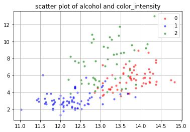
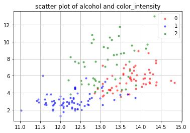
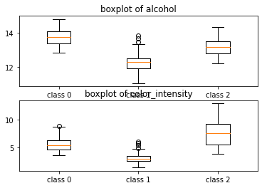
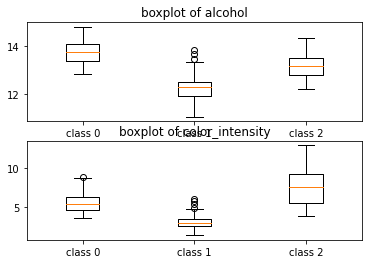

그래픽 인자 조정
2.3. 그래픽 인자 조정#
numpy의 설치
가상환경의 선택
conda install numpy Anaconda 설치 경로의 확인:
벡터와 행렬의 생성 numpy.array (1) 리스트를 이용한 벡터의 생성 (2) numpy.zeros(), numpy.ones() (3) numpy.repeat() (4) 리스트를 이용한 행렬의 생성 (5) 대각행렬 생성하기 (numpy.diag())
벡터와 행렬의 형태 변환 (1) shape 이해하기 (2) reshape 이해하기 (order = ‘C’ or ‘F’)
import matplotlib.pyplot as plt
from sklearn.datasets import load_wine
# load_boston: 보스톤 집값 데이터
# load_iris: 아이리스 붓꽃 데이터
# load_diabetes: 당뇨병 환자 데이터
# load_digits: 손글씨 데이터
# load_linnerud: multi-output regression 용 데이터
# load_wine: 와인 데이터
# load_breast_cancer: 위스콘신 유방암 환자 데이터
rdata = load_wine()
rdata.keys()
x = rdata.data
y = rdata.target
x_names = rdata.feature_names
y_names= rdata.target_names
fig, ax = plt.subplots()
i = 0 ; j = 1
ax.scatter(x[:,i],x[:,j], s = 10, alpha = 0.5)
ax.set_title("scatter plot of {0} and {1}".
format(x_names[i], x_names[j]))
#%%
Text(0.5, 1.0, 'scatter plot of alcohol and malic_acid')

fig, ax = plt.subplots()
i = 0 ; j = 9
ax.scatter(x[:,i],x[:,j], s = 10, alpha = 0.5)
ax.set_title("scatter plot of {0} and {1}".
format(x_names[i], x_names[j]))
#%%
fig, ax = plt.subplots()
i = 0 ; j = 9
idx = (y==0)
ax.scatter(x[idx,i],x[idx,j], s = 10, alpha = 0.5,
color = 'red', label='0')
idx = (y==1)
ax.scatter(x[idx,i],x[idx,j], s = 10, alpha = 0.5,
color = 'blue', label='1')
idx = (y==2)
ax.scatter(x[idx,i],x[idx,j], s = 10, alpha = 0.5,
color = 'green', label='2')
ax.legend(loc='best')
ax.grid(True)
ax.set_title("scatter plot of {0} and {1}".
format(x_names[i], x_names[j]))
#%%
fig, ax = plt.subplots()
i = 0
idx0 = (y==0)
idx1 = (y==1)
idx2 = (y==2)
ax.boxplot([x[idx0,i],x[idx1,i],x[idx2,i]], labels =
['class 0', 'class 1', 'class 2'])
ax.set_title("boxplot of {0}".format(x_names[i]))
# %% 그림 두개의 비교
fig, (ax0, ax1) = plt.subplots(2,1)
i = 0
idx0 = (y==0)
idx1 = (y==1)
idx2 = (y==2)
ax0.boxplot([x[idx0,i],x[idx1,i],x[idx2,i]], labels =
['class 0', 'class 1', 'class 2'])
ax0.set_title("boxplot of {0}".format(x_names[i]))
i = 9
ax1.boxplot([x[idx0,i],x[idx1,i],x[idx2,i]], labels =
['class 0', 'class 1', 'class 2'])
ax1.set_title("boxplot of {0}".format(x_names[i]))
#%%
# 2-3-2
a = np.random.normal(0, 1, 1000)
b = np.random.normal(5, 1, 200)
x = np.concatenate([a,b])
fig, ax = plt.subplots(1,2, figsize = (20,5))
ax[0].plot(x, color='tab:blue')
ax[0].set_title("blue_left")
ax[1].plot(x, color = 'darkred')
ax[1].set_yscale('log')
# 참고 subplot 이 (2,3)이면, ax[i,j] 좌표를 사용해야 함.
# %%
# x 축의 grid를 조정할 수 있음 xticks, label
n = int(1e+3)
x = np.random.normal(size = n)
fig, ax = plt.subplots(2,1, figsize = (10,10))
ax[0].plot(x, color='tab:blue')
ax[0].set_title("blue_top")
ax[1].plot(x, color = 'orange', alpha = 0.8)
ax[1].set_title("orange_bottom")
ax[1].grid(True)
ax[1].set_xticks(np.arange(0,1000, 250), labels= [0,'q1', 'q2', 'q3'])
#%%
# 2-3-3
fig, ax = plt.subplots(2,2, figsize = (10,10))
ax[0,0].plot(x, color='tab:blue')
ax[0,0].set_title("blue_top_left")
ax[0,1].plot(x, color = 'orange', alpha = 0.8)
ax[0,1].set_title("orange_top_right")
ax[1,0].plot(x, color='tab:red')
ax[1,0].set_title("red_bottom_left")
ax[1,1].plot(x, color = 'coral', alpha = 0.8)
ax[1,1].set_title("coral_bottom_right")
# %%
# 축을 추가하는 방법
np.random.seed(1)
x = np.random.normal(120, 1, size = 1000)
fig, ax = plt.subplots(2,1, figsize = (10,10), layout ='constrained')
ax[1].plot(x, color = 'orange', alpha = 0.8)
ax[1].grid(True)
ax[1].set_xticks(np.arange(0,1000, 250), labels= [0,'q1', 'q2', 'q3'])
# 투명한 axis를 복사
ax2 = ax[1].twinx()
y = np.linspace(0,1,1000)
ax2.plot(y)
# %%
# 날짜 위에서 처리
#%%
## 응용: 수학기호쓰기
# 2-3-3
x = np.random.normal(120, 1, size = 1000)
fig, ax = plt.subplots(figsize = (10,5))
ax.hist(x, bins = 30, range = (115, 125), density = True,
facecolor="silver")
ax.set_title("My histogram")
ax.set_xlabel("weight")
ax.text(x = 116, y = 0.4, s = r'$\mu = 115$')
ax.grid(True, which = 'both', axis = 'y', linestyle ='--')
ax.annotate("here", xy=(116,0), xytext = (116,0.20),
arrowprops= {'facecolor': 'black', 'shrink': 0.05})
#%%
dict(facecolor='black', shrink=0.05)
# %%
x
---------------------------------------------------------------------------
NameError Traceback (most recent call last)
c:\Users\jjjeo\Documents\GitHub\visualization\chapters\02\attribute.ipynb Cell 5 in <cell line: 50>()
<a href='vscode-notebook-cell:/c%3A/Users/jjjeo/Documents/GitHub/visualization/chapters/02/attribute.ipynb#W5sZmlsZQ%3D%3D?line=46'>47</a> ax1.set_title("boxplot of {0}".format(x_names[i]))
<a href='vscode-notebook-cell:/c%3A/Users/jjjeo/Documents/GitHub/visualization/chapters/02/attribute.ipynb#W5sZmlsZQ%3D%3D?line=47'>48</a> #%%
<a href='vscode-notebook-cell:/c%3A/Users/jjjeo/Documents/GitHub/visualization/chapters/02/attribute.ipynb#W5sZmlsZQ%3D%3D?line=48'>49</a> # 2-3-2
---> <a href='vscode-notebook-cell:/c%3A/Users/jjjeo/Documents/GitHub/visualization/chapters/02/attribute.ipynb#W5sZmlsZQ%3D%3D?line=49'>50</a> a = np.random.normal(0, 1, 1000)
<a href='vscode-notebook-cell:/c%3A/Users/jjjeo/Documents/GitHub/visualization/chapters/02/attribute.ipynb#W5sZmlsZQ%3D%3D?line=50'>51</a> b = np.random.normal(5, 1, 200)
<a href='vscode-notebook-cell:/c%3A/Users/jjjeo/Documents/GitHub/visualization/chapters/02/attribute.ipynb#W5sZmlsZQ%3D%3D?line=51'>52</a> x = np.concatenate([a,b])
NameError: name 'np' is not defined
 

 
